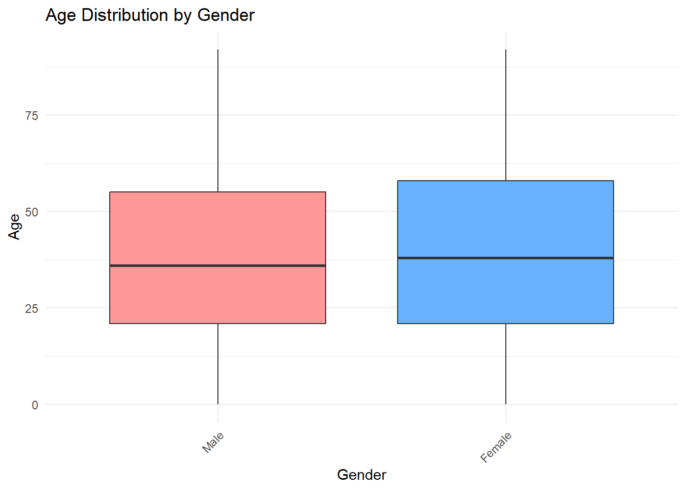
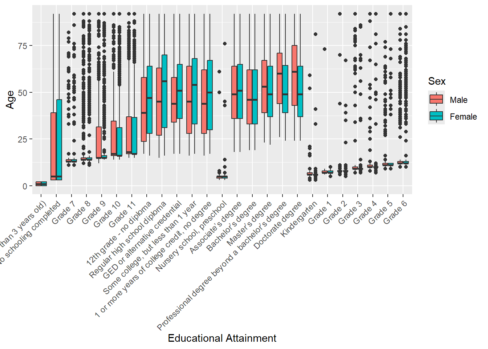
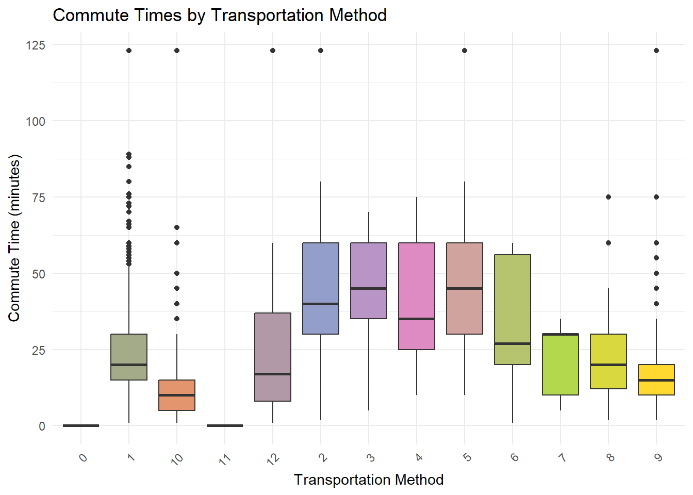
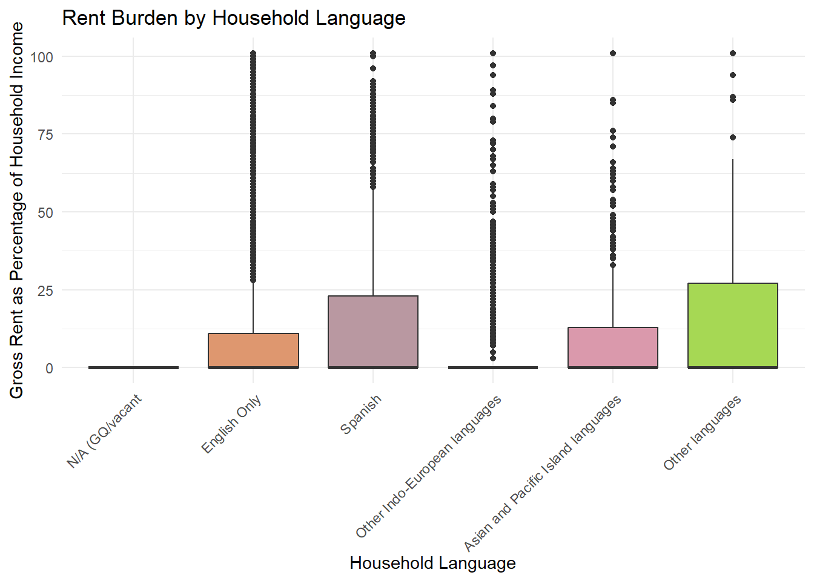
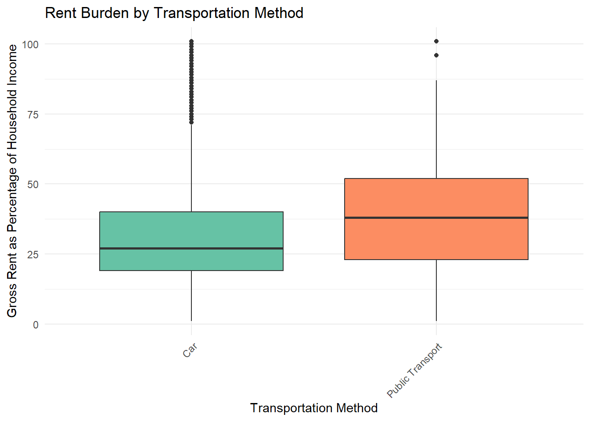

# Loading packages
library(tidyverse)
library(httr)
library(jsonlite)
library(dplyr)
library(tidycensus)
library(lubridate)
library(tibble)
library(ggplot2)
library(quantreg)ST: 558 Project 1 R Functions for Query and Summarization of Public Use Microdata Sample (PUMS) Census API (Application Programming Interface) data
Introduction
The Public Use Microdata Sample (PUMS) Census API (Application Programming Interface) is a collection of data files from the United States Census Bureau that provides access to data samples of the U.S. population and housing units. More specifically, these PUMS data sets cover the HUD’s (U.S. Department of Housing and Urban Development) largest rental assistance programs (Public Housing, Section 8, etc). This data is compiled from responses to the American Community Surveys (ACS). The PUMS is comprised of two files: one for person records and the other for housing unit records. It includes geographic and household information including, but not limited to: family type, household income, race, gender, etc. The PUMS’ data sets are valuable sources of information to policymakers and the researchers, as it can give some insight on how to better allocate resources and focus on helping those who need it the most.
By leveraging these data sets, we hope to not only grow our R skills, but to learn a little more about the world around us. For the first half, we’ll be working on building functions, both helper and main functions, that will help us examine, check, process, manipulate, and build our main function to query PUMS’ API. The second half of the project will build onto the first and delve into functions to that will summarize data and create visuals.
First thing’s first, with every R project, we install and load in the necessary packaaes to help create functions to do what we need.
PART I Obtaining the Data from PUMS API
- Next, we are going to show how URL can interact with the PUMS’ API. Typically we’d start with a more bare URL when building a URL from scratch (more on that later), but I ended choosing this one because it provided a more visually appealing output as an example. After setting up the URL and making a GET, request to PUMS’ API (a request sent to a server asking an API to provide a service/information), we’ll take that raw data, and parse it into JSON. The initial_parse returns a tibble with the column names on the first row, so we extract those names and set them as the column names. Then we drop the first row and print a nice little tibble to get a glimpse of what information the example_url contains (take a look below!). Here we have a small tibble, 6x4, because we used the function head. These are the steps to querying APIs. So in short, we assign a URL, formulate the API request, send it, allow time to handle the response, and process the data.
# Sample API call, transformed to tibble
example_url <- "https://api.census.gov/data/2022/acs/acs1/pums?get=SEX,PWGTP,MAR&SCHL=24"
initial_response <- GET(url = example_url)
initial_parse <- fromJSON(rawToChar(initial_response$content))
col_names <- (initial_parse[1,])
colnames(initial_parse) <- col_names
initial_parse <- initial_parse[-1,]
initial_parse <- as_tibble(initial_parse)
head(initial_parse)# A tibble: 6 × 4
SEX PWGTP MAR SCHL
<chr> <chr> <chr> <chr>
1 2 6 5 24
2 2 23 2 24
3 1 23 3 24
4 1 80 5 24
5 1 16 1 24
6 1 107 3 24 - To keep things simple and organized, below are all of the variables and their assigned values. Here we created vectors for each variable to reference later on.
# Numeric variables
num_vars <- c("AGEP", "GASP", "GRPIP", "JWMNP", "PWGTP", "JWAP","JWDP")
# Categorical variables
cat_vars <- c("FER", "HHL", "HISPEED", "JWTRNS", "SCH", "SCHL", "SEX")
# Geography variables
geo_vars <- c("All", "Region", "Division", "State")
# Combined variables (numeric categorical, time)
combined_vars <- c("AGEP", "GASP", "GRPIP", "JWMNP", "PWGTP", "FER", "HHL", "HISPEED", "JWTRNS", "SCH", "SCHL", "SEX", "JWAP", "JWDP")- Next we’ll dive into all of the functions we made in order to create our main API query. The first one we have is the year_checker function. Our if statement here only allows the function to pass if the year is between 2010 to 2022 (values are inclusive). However, if the year falls outside of the range, a stop function will raise an error message and cease execution of the code.
# Year Checker
# Function to check if entered year is valid
year_checker <- function(year) {
if (year > 2022 | year < 2010) {
stop("Invalid year value. Please type in a number between 2010 and 2022.")
}
}- Our second function, the num_checker, checks and coerces our assigned numeric and time variables to their respective data types. Due to the parsed JSON data, our data defaulted to a data type of character. Coercing the variables to the desired data type allows for meaning manipulation and analysis. This function contains 1 parameter and takes in 1 vector, num_vars, which is used to determine if the user input is of type num or time then converts it respectively to its desired data type. The function works by looping the column names from initial_parse. Each column name is checked to see if its name matches any from the vector, num_vars. If the column name matches in num_vars, it will be converted to numeric through the use of as.numeric. Once the function finishes looping, it will return the modified tibble/dataframe.
# Numeric Checker
# Function to convert columns to desired numeric and time data types
num_checker <- function(initial_parse) {
num_vars <- c("AGEP", "GASP", "GRPIP", "JWMNP", "PWGTP", "JWAP","JWDP")
col_names <- colnames(initial_parse)
for (name in col_names) {
if (name %in% num_vars) {
print(name)
initial_parse[[name]] <- as.numeric(initial_parse[[name]])
}
}
return(initial_parse)
}
# Testing purposes/example
initial_parse <- num_checker(initial_parse)[1] "PWGTP"- Categorical checker works similarly to the numeric checker. This function contains 1 parameter and takes in 1 vector, which is used to determine if the user input is of type factor then converts it respectively to its desired data type.
# Categorical checker
# Function to convert columns to desired factor data types
cat_checker <- function(initial_parse) {
cat_vars <- c("FER", "HHL", "HISPEED", "JWTRNS", "SCH", "SCHL", "SEX")
col_names <- colnames(initial_parse)
for (name in col_names) {
if (name %in% cat_vars) {
print(name)
initial_parse[[name]] <- as.factor(initial_parse[[name]])
}
if (name == "SEX") {
initial_parse <- initial_parse %>%
mutate(SEX = recode(SEX, "1" = "Male", "2" = "Female"))
}
if (name == "SCHL") {
initial_parse <- initial_parse %>%
mutate(SCHL = recode(SCHL, "0" = "N/A (less than 3 years old)", "1" = "No schooling completed", "2" = "Nursery school, preschool", "3" = "Kindergarten", "4" = "Grade 1", "5" = "Grade 2", "6" = "Grade 3", "7" = "Grade 4", "8" = "Grade 5", "9" = "Grade 6", "10" = "Grade 7", "11" = "Grade 8", "12" = "Grade 9", "13" = "Grade 10", "14" = "Grade 11", "15" = "12th grade - no diploma", "16" = "Regular high school diploma", "17" = "GED or alternative credential", "18" = "Some college, but less than 1 year", "19" = "1 or more years of college credit, no degree", "20" = "Associate’s degree", "21" = "Bachelor’s degree", "22" = "Master’s degree", "23" = "Professional degree beyond a bachelor’s degree", "24" = "Doctorate degree"))
}
if (name == "HISPEED") {
initial_parse <- initial_parse %>%
mutate(HISPEED = recode(HISPEED, "0" = "N/A (GQ/vacant/no paid access to the internet)", "1" = "Yes", "2" = "No"))
}
if (name == "HHL") {
initial_parse <- initial_parse %>%
mutate(HHL = recode(HHL, "0" = "N/A (GQ/vacant", "1" = "English Only", "2" = "Spanish", "3" = "Other Indo-European languages", "4" = "Asian and Pacific Island languages", "5" = "Other languages"))
}
if (name == "FER") {
initial_parse <- initial_parse %>%
mutate(FER = recode(FER, "0" = "N/A (less than 15 years/greater than 50 years/ male)", "1" = "Yes", "2" = "No"))
}
}
return(initial_parse)
}
# Testing purposes/example
initial_parse <- cat_checker(initial_parse)[1] "SEX"
[1] "SCHL"- Next we have the geography checker. This function has 1 parameter and takes in 1 vector. If the provided geography_level is in the geo_vars vector, it will print that the geography level is valid. If not then it will print is not valid.
# Geography Checker
# Function to specify and check if geography level is correct
geo_checker <- function(geography_level, geography_subset) {
geo_vars <- c("All", "Region", "Division", "State")
if (geography_level %in% geo_vars) {
print("Geography level is valid.")
}
else {
print("Geography level is not valid.")
}
}
# Testing purposes/example
geo_checker("State", "08")[1] "Geography level is valid."- Here we have a function to query the census. This function contains 4 parameters. First, an empty tibble is initialized in order to store the results; this is important as it holds the multiple tibbles to later bind together. We assign a variable named year_list to take on the function string split for parameter, year, because we want to allow the user to be able to specify multiple years of survey data. String split works here because when inputting multiple years, “2012,2013,2015”, the user needs to input the years all as one string, then strsplit will work to split the different years into a list of year to call each year separately. The for loop at the bottom, (i in year_list[[1]]), loops over the list of years from the user into the query_url, allowing them to make API requests for each given year.
- Next, there are some words that we hard coded into the URL because we needed to return those columns, we chose: “PWGTP”, “GASP”, and “FER”. However, if the user doesn’t know, they could input one of these columns again, producing a duplicate column. To fix this, we have to use grepl, to search for a string within a string then we use gsub to remove the said string. The second gsub is a catch all, removing commas from before/after the string due to user input. This way, even if the user inputs those columns, it would no longer create a duplicate. Then we create an if statement where it does not allow the user to input a geography_subset if they choose “All” by creating a variable named geo_meta and add it onto our query_url below. So to briefly go over our first example, bottom portion of the code is using the given query_url, we send a GET request to formulate the API request, allow time to handle the response, process the data, extract column nam, apply them accordingly, then create tibbles. As mentioned earlier, if user inputs multiple years then the for loop won’t end until the last inputted year, then the bind_rows function will combine all of the tibbles from each year of the user input together.
# Function to Query the Census API
# Created if statements using grepl/gsub to remove duplicate columns
# Allow users to call multiple years then combining tibbles as the end using bind_rowss
# Used helper GET here then turned into tibble
census_query <- function(year, geography_level, geography_subset, get) {
initial_parse_final <- tibble()
year_list <- strsplit(year, ",")
url <- "https://api.census.gov/data/"
if (grepl("PWGTP", get)) {
get <- gsub("PWGTP|PWGTP,",'',get)
get <- gsub("^\\,|\\,$",'',get)
}
if (grepl("GASP", get)) {
get <- gsub("GASP|GASP,",'',get)
get <- gsub("^\\,|\\,$",'',get)
}
if (grepl("FER", get)) {
get <- gsub("FER|FER,",'',get)
get <- gsub("^\\,|\\,$",'',get)
}
geo_meta <- paste0("&for=", geography_level,":",geography_subset)
if (geography_level == "All") {
geo_meta <- ""
}
for (i in year_list[[1]]) {
query_url <- paste0(url,i,"/acs/acs1/pums?","get=PWGTP,GASP,FER,",get,geo_meta)
initial_response <- GET(url = query_url)
initial_parse <- fromJSON(rawToChar(initial_response$content))
col_names <- (initial_parse[1,])
colnames(initial_parse) <- col_names
initial_parse <- initial_parse[-1,]
initial_parse <- as_tibble(initial_parse)
initial_parse_final <- bind_rows(initial_parse,initial_parse_final)
}
return(initial_parse_final)
}
# Testing purposes/example
initial_parse <- census_query(year = "2011,2014", "State", "08", "AGEP,SEX")- Now we can create our final/main API query. This API query contains 4 parameters (year = “2022”, geography_level = “All”, geography_subset and get = “SEX,AGEP,PWGTP”, with their respective defaults) and takes in vector combined_vars. We create a strsplit for the get results, similarly to what we did for the years in the census_query results. When a user inputs variables, it will check and ensure those column names are valid. If they are then it will print, “Column X entered is valid” and if not then it will tell the user to try again. After that, initial_parse is reassigned and overwritten once it goes through each function (census_query, num_checker, time_checker, cat_checker) and checker (geo_checker, year_checker). Then it will return a final tibble at the end.
API Function
# Main API Query Function (combined all of the previous functions)
# Added SEX, AGEP, PWGTP in the get of the main_query to be returned as default
# Added combined_vars and for loop to validate and check that user inputted columns are valid
main_query <- function(year = "2022",
geography_level = "All",
geography_subset,
get = "SEX,AGEP,PWGTP") {
combined_vars <- c("AGEP", "GASP", "GRPIP", "JWMNP", "PWGTP", "FER", "HHL", "HISPEED", "JWTRNS", "SCH", "SCHL", "SEX", "JWAP", "JWDP")
get_list <- strsplit(get, ",")
for (i in get_list[[1]]) {
if (i %in% combined_vars) {
cat("Column (",i ,") entered is valid.")
}
else (
stop("Column (",i,") entered is not valid. Try again")
)
}
initial_parse <- census_query(year, geography_level, geography_subset, get)
initial_parse <- num_checker(initial_parse)
initial_parse <- cat_checker(initial_parse)
geo_checker(geography_level, geography_subset)
year_checker(year)
# This is for the summary function in Part 2
class(initial_parse) <-c("census", class(initial_parse))
return(initial_parse)
}
# Testing purposes/example
test <- main_query("2018,2015", "State", "08", "FER,JWAP,SEX,SCHL,GASP")Column ( FER ) entered is valid.Column ( JWAP ) entered is valid.Column ( SEX ) entered is valid.Column ( SCHL ) entered is valid.Column ( GASP ) entered is valid.[1] "PWGTP"
[1] "GASP"
[1] "JWAP"
[1] "FER"
[1] "SEX"
[1] "SCHL"
[1] "Geography level is valid."# All variable query
everything <- main_query("2022", "State", "08", "AGEP,GASP,GRPIP,JWMNP,PWGTP,FER,HHL,HISPEED,JWTRNS,SCH,SCHL,SEX,JWAP,JWDP")Column ( AGEP ) entered is valid.Column ( GASP ) entered is valid.Column ( GRPIP ) entered is valid.Column ( JWMNP ) entered is valid.Column ( PWGTP ) entered is valid.Column ( FER ) entered is valid.Column ( HHL ) entered is valid.Column ( HISPEED ) entered is valid.Column ( JWTRNS ) entered is valid.Column ( SCH ) entered is valid.Column ( SCHL ) entered is valid.Column ( SEX ) entered is valid.Column ( JWAP ) entered is valid.Column ( JWDP ) entered is valid.[1] "PWGTP"
[1] "GASP"
[1] "AGEP"
[1] "GRPIP"
[1] "JWMNP"
[1] "JWAP"
[1] "JWDP"
[1] "FER"
[1] "HHL"
[1] "HISPEED"
[1] "JWTRNS"
[1] "SCH"
[1] "SCHL"
[1] "SEX"
[1] "Geography level is valid."print(everything)# A tibble: 59,841 × 15
PWGTP GASP FER AGEP GRPIP JWMNP HHL HISPEED JWTRNS SCH SCHL SEX
<dbl> <dbl> <fct> <dbl> <dbl> <dbl> <fct> <fct> <fct> <fct> <fct> <fct>
1 70 3 No 18 0 0 N/A … N/A (G… 11 2 Some… Fema…
2 41 3 N/A (le… 35 0 0 N/A … N/A (G… 0 1 Grad… Male
3 35 3 N/A (le… 40 0 0 N/A … N/A (G… 0 1 Grad… Male
4 30 3 No 20 0 0 N/A … N/A (G… 0 2 1 or… Fema…
5 4 3 N/A (le… 14 0 0 N/A … N/A (G… 0 2 Grad… Male
6 75 3 No 28 0 0 N/A … N/A (G… 0 1 Regu… Fema…
7 22 3 N/A (le… 47 0 0 N/A … N/A (G… 0 1 Regu… Male
8 36 3 N/A (le… 28 0 0 N/A … N/A (G… 0 1 Regu… Male
9 59 3 N/A (le… 77 0 0 N/A … N/A (G… 0 1 Regu… Fema…
10 11 3 N/A (le… 20 0 2 N/A … N/A (G… 10 1 Some… Male
# ℹ 59,831 more rows
# ℹ 3 more variables: JWAP <dbl>, JWDP <dbl>, state <chr>- The API function, main_query, interacts, retrieves, and processes raw data from the U.S. Census API, and allows us to query, structure, and validate data, into a tibble based on user input. With that, we will move onto creating the summary and plot functions, hoping to research and analyze some interesting data that we extract from the API function.
PART II Summarizing the Data and Plots
Summary Function
- In this section we have created 2 functions “Summary” function takes the data from tibble and generate summary statistics (mean and standard deviation) for all numeric variables and counts for all categorical variables from the data frame. This function takes three arguments - class census, numeric variables to generate summary statistics and categorical variables. The second function is a plot function, where we generate the box plot.
summary.census <- function(object, numeric_vars = NULL, categorical_vars = NULL) {
#convert JWAP and JWDP into numeric variables
object$JWAP <- as.numeric(object$JWAP)
object$JWDP <- as.numeric(object$JWDP)
# If no variables specified, get all appropriate variables
if (is.null(numeric_vars)) {
numeric_vars <- c(names(object)[sapply(object, is.numeric)], "JWAP", "JWDP")
numeric_vars <- setdiff(numeric_vars, "PWGTP") # Exclude weight variable
}
if (is.null(categorical_vars)) {
categorical_vars <- names(object)[sapply(object, function(x)
is.character(x) || is.factor(x))]
}
# Ensure JWAP and JWDP are in numeric_vars and not in categorical_vars
numeric_vars <- union(numeric_vars, c("JWAP", "JWDP"))
categorical_vars <- setdiff(categorical_vars, c("JWAP", "JWDP"))
# Initialize results list
results <- list()
# Define labels for all variables
variable_labels <- list(
AGEP = "Age",
JWMNP = "Travel time to work",
GRPIP = "Gross rent as a percentage of household income",
GASP = "Gasoline cost (monthly)",
FER = "Gave birth to child within the past 12 months",
SEX = "Sex",
SCH = "School enrollment",
SCHL = "Educational attainment",
HHL = "Household language",
HISPEED = "High speed internet",
JWTRNS = "Means of transportation to work",
JWAP = "Time of arrival at work",
JWDP = "Time of departure for work"
)
# Calculate weighted means and standard deviations for numeric variables
if (length(numeric_vars) > 0) {
numeric_summary <- list()
for (var in numeric_vars) {
# Get the variable and weights
x <- object[[var]]
w <- object[["PWGTP"]]
# Remove NA and infinite values
valid <- !is.na(x) & !is.infinite(x) & !is.na(w) & !is.infinite(w)
x <- x[valid]
w <- w[valid]
# Calculate weighted mean
weighted_mean <- sum(x * w) / sum(w)
# Calculate weighted standard deviation
weighted_sd <- sqrt(sum(x^2 * w) / sum(w) - weighted_mean^2)
# Get label for the variable
label <- if (var %in% names(variable_labels)) variable_labels[[var]] else var
# Store results
numeric_summary[[label]] <- list(
mean = weighted_mean,
sd = weighted_sd
)
}
results[["numeric_summary"]] <- numeric_summary
}
# Calculate counts for categorical variables
if (length(categorical_vars) > 0) {
categorical_summary <- list()
# Define mappings for categorical variables
category_mappings <- list(
FER = c("0" = "N/A", "1" = "Yes", "2" = "No"),
SEX = c("1" = "Male", "2" = "Female"),
SCHL = c("1" = "No schooling completed",
"2" = "Nursery school, preschool",
"3" = "Kindergarten",
"4" = "Grade 1",
"5" = "Grade 2",
"6" = "Grade 3",
"7" = "Grade 4",
"8" = "Grade 5",
"9" = "Grade 6",
"10" = "Grade 7",
"11" = "Grade 8",
"12" = "Grade 9",
"13" = "Grade 10",
"14" = "Grade 11",
"15" = "12th grade - no diploma",
"16" = "Regular high school diploma",
"17" = "GED or alternative credential",
"18" = "Some college, but less than 1 year",
"19" = "1 or more years of college credit, no degree",
"20" = "Associate's degree",
"21" = "Bachelor's degree",
"22" = "Master's degree",
"23" = "Professional degree beyond a bachelor's degree",
"24" = "Doctorate degree"),
HHL = c("0" = "N/A (GQ/vacant)",
"1" = "English Only",
"2" = "Spanish",
"3" = "Other Indo-European languages",
"4" = "Asian and Pacific Island languages",
"5" = "Other Language"),
HISPEED = c("0" = "N/A (GQ/vacant/no paid access to the internet)",
"1" = "Yes",
"2" = "No"),
SCH = c("0" = "N/A (less than 3 years old)",
"1" = "No, has not attended in the last 3 months",
"2" = "Yes, public school or public college",
"3" = "Yes, private school or college or home school"))
for (var in categorical_vars) {
# Get counts
counts <- table(object[[var]])
# Apply mapping if available
# Special handling for SEX variable
if (var == "SEX") {
counts_to_use <- counts
names(counts_to_use) <- levels(object[[var]]) # Preserve original labels
}else if (var == "JWTRNS") {
# Special handling for JWTRNS
jwtrns_mapping <- c(
"0" = "N/A",
"1" = "Car, truck, or van",
"2" = "Bus",
"3" = "Subway or elevated rail",
"4" = "Long-distance train or commuter rail",
"5" = "Light rail, streetcar, or trolley",
"6" = "Ferryboat",
"7" = "Taxicab",
"8" = "Motorcycle",
"9" = "Bicycle",
"10" = "Walked",
"11" = "Worked from home",
"12" = "Other method"
)
counts_to_use <- counts
names(counts_to_use) <- jwtrns_mapping[names(counts)]
} else if (var %in% names(category_mappings)) {
mapped_counts <- counts
names(mapped_counts) <- category_mappings[[var]][names(counts)]
counts_to_use <- mapped_counts
} else {
counts_to_use <- counts
}
# Get label for the variable
label <- if (var %in% names(variable_labels)) variable_labels[[var]] else var
# Store results with label
categorical_summary[[label]] <- counts_to_use
}
results[["categorical_summary"]] <- categorical_summary
}
return(results)
}Now Let’s test our summary function. This will give us the weighted means and standard deviations for numeric variables and counts for categorical variables
# Using default behavior (all variables)
results1 <- summary.census(everything)
print(results1)$numeric_summary
$numeric_summary$`Gasoline cost (monthly)`
$numeric_summary$`Gasoline cost (monthly)`$mean
[1] 65.96931
$numeric_summary$`Gasoline cost (monthly)`$sd
[1] 145.7646
$numeric_summary$Age
$numeric_summary$Age$mean
[1] 38.80219
$numeric_summary$Age$sd
[1] 22.42793
$numeric_summary$`Gross rent as a percentage of household income`
$numeric_summary$`Gross rent as a percentage of household income`$mean
[1] 10.71139
$numeric_summary$`Gross rent as a percentage of household income`$sd
[1] 22.36287
$numeric_summary$`Travel time to work`
$numeric_summary$`Travel time to work`$mean
[1] 10.6618
$numeric_summary$`Travel time to work`$sd
[1] 18.26052
$numeric_summary$`Time of arrival at work`
$numeric_summary$`Time of arrival at work`$mean
[1] 42.47839
$numeric_summary$`Time of arrival at work`$sd
[1] 55.53998
$numeric_summary$`Time of departure for work`
$numeric_summary$`Time of departure for work`$mean
[1] 22.43893
$numeric_summary$`Time of departure for work`$sd
[1] 31.50714
$categorical_summary
$categorical_summary$`Gave birth to child within the past 12 months`
<NA> <NA> <NA>
46345 655 12841
$categorical_summary$`Household language`
<NA> <NA> <NA> <NA> <NA> <NA>
2790 46143 6558 2226 1591 533
$categorical_summary$`High speed internet`
<NA> <NA> <NA>
5405 47042 7394
$categorical_summary$`Means of transportation to work`
N/A Car, truck, or van
29658 21488
Walked Worked from home
816 6791
Other method Bus
272 279
Subway or elevated rail Long-distance train or commuter rail
13 15
Light rail, streetcar, or trolley Ferryboat
104 6
Taxicab Motorcycle
17 50
Bicycle
332
$categorical_summary$`School enrollment`
N/A (less than 3 years old)
1592
No, has not attended in the last 3 months
45041
Yes, public school or public college
11146
Yes, private school or college or home school
2062
$categorical_summary$`Educational attainment`
<NA> <NA> <NA> <NA> <NA> <NA> <NA> <NA> <NA> <NA> <NA> <NA> <NA>
1592 1502 777 941 952 1111 1342 790 8407 1842 3275 6427 773
<NA> <NA> <NA> <NA> <NA> <NA> <NA> <NA> <NA> <NA> <NA> <NA>
3761 13278 5970 1284 1031 665 576 648 682 710 717 788
$categorical_summary$Sex
Male Female
29940 29901
$categorical_summary$state
08
59841 We can use specific variables and check if we can generate the summary for examples we can select few numeric variables and few categorical variables as follows
# Specifying specific variables
results <- summary.census(everything,
numeric_vars = c("AGEP", "GRPIP"),
categorical_vars = c("SEX", "FER"))
print(results)$numeric_summary
$numeric_summary$Age
$numeric_summary$Age$mean
[1] 38.80219
$numeric_summary$Age$sd
[1] 22.42793
$numeric_summary$`Gross rent as a percentage of household income`
$numeric_summary$`Gross rent as a percentage of household income`$mean
[1] 10.71139
$numeric_summary$`Gross rent as a percentage of household income`$sd
[1] 22.36287
$numeric_summary$`Time of arrival at work`
$numeric_summary$`Time of arrival at work`$mean
[1] 42.47839
$numeric_summary$`Time of arrival at work`$sd
[1] 55.53998
$numeric_summary$`Time of departure for work`
$numeric_summary$`Time of departure for work`$mean
[1] 22.43893
$numeric_summary$`Time of departure for work`$sd
[1] 31.50714
$categorical_summary
$categorical_summary$Sex
Male Female
29940 29901
$categorical_summary$`Gave birth to child within the past 12 months`
<NA> <NA> <NA>
46345 655 12841 Plot Function
- The following function is created to generate box plots. This will take categorical values, numeric values, title for the plot, x-axis and y-axis label. The fill_color parameter decide the color of the plot.
plot.census <- function(x, cat_var, num_var,
title = NULL,
x_label = NULL,
y_label = NULL,
fill_colors = c("#1f77b4", "#ff7f0e"),
...) {
# Check if the object is of class "census"
if (!inherits(x, "census")) {
stop("This function only works for objects of class 'census'")
}
# Check if cat_var and num_var are provided
if (missing(cat_var) || missing(num_var)) {
stop("Both cat_var and num_var must be specified")
}
# Check if cat_var and num_var exist in the data
if (!cat_var %in% names(x)) {
stop(paste("Categorical variable", cat_var, "not found in the data"))
}
if (!num_var %in% names(x)) {
stop(paste("Numeric variable", num_var, "not found in the data"))
}
# Check if cat_var is categorical (factor or character)
if (!is.factor(x[[cat_var]]) && !is.character(x[[cat_var]])) {
stop(paste(cat_var, "must be a categorical variable (factor or character)"))
}
# Check if num_var is numeric
if (!is.numeric(x[[num_var]])) {
stop(paste(num_var, "must be a numeric variable"))
}
# Set default labels if not provided
if (is.null(title)) {
title <- paste("Weighted Boxplot of", num_var, "by", cat_var)
}
if (is.null(x_label)) {
x_label <- cat_var
}
if (is.null(y_label)) {
y_label <- num_var
}
# Create the plot
p <- ggplot(x, aes(x = .data[[cat_var]], y = .data[[num_var]], weight = PWGTP, fill = .data[[cat_var]])) +
geom_boxplot() +
labs(title = title, x = x_label, y = y_label) +
scale_fill_manual(values = fill_colors) +
theme_minimal() +
theme(axis.text.x = element_text(angle = 45, hjust = 1),
legend.position = "none") # Remove legend as it's redundant with x-axis labels
# Print the plot
print(p)
# Return the plot object invisibly
invisible(p)
}Let’s test the plot function
# Age distribution by sex
plot.census(everything,
cat_var = "SEX",
num_var = "AGEP",
title = "Age Distribution by Sex",
x_label = "Sex",
y_label = "Age",
fill_colors = c("#FFA07A", "#20B2AA"))# Travel time to work by sex
plot.census(everything,
cat_var = "SEX",
num_var = "JWMNP",
title = "Travel Time to Work by Sex",
x_label = "Sex",
y_label = "Travel Time (minutes)",
fill_colors = c("#4E79A7", "#F28E2B"))#Gross rent as percentage of income by household language
# Create a color palette for the number of language categories
num_languages <- length(unique(everything$HHL))
color_palette <- colorRampPalette(c("#1f77b4", "#ff7f0e", "#2ca02c", "#d62728", "#9467bd", "#8c564b"))(num_languages)
# Create the plot
rent_language_plot <- plot.census(everything,
cat_var = "HHL",
num_var = "GRPIP",
title = "Gross Rent as Percentage of Household Income by Household
Language",
x_label = "Household Language",
y_label = "Gross Rent as Percentage of Income",
fill_colors = color_palette)Understanding the data and interpresting it using statistics
Now we are all set! We can extract the data using main_query function and summaries it by summary.census function also we can create box plots using the plot function. Let’s understand the relationship between different variables and interpret the data using our summary and plot functions.
For example we would like to get the answers of following questions
What is the overall age and gender distribution of the population?
# Get summary statistics
summary_stats <- summary.census(everything)
print(summary_stats$numeric_summary$Age)$mean
[1] 38.80219
$sd
[1] 22.42793print(summary_stats$categorical_summary$Sex) Male Female
29940 29901 # Create an age distribution plot by gender
age_gender_plot <- plot.census(everything,
cat_var = "SEX",
num_var = "AGEP",
title = "Age Distribution by Gender",
x_label = "Gender",
y_label = "Age",
fill_colors = c("#FF9999", "#66B2FF"))
The summary statistics for age show:
Mean age: 38.80 years Standard deviation: 22.43 years
This indicates that:
The average age of the population is about 39 years old. There’s a considerable spread in ages, with a standard deviation of about 22 years. This suggests a diverse population with a mix of younger and older individuals.
Gender Distribution Male = 29,940 (50.03%) Female = 29,901 (49.97%)
Which shows not much a difference in gender distribution
How does the educational attainment vary across age groups and genders?
# Create a plot of educational attainment by age, colored by gender
ggplot(everything, aes(x = SCHL, y = AGEP, fill = SEX)) +
geom_boxplot() +
theme(axis.text.x = element_text(angle = 45, hjust = 1)) +
labs(x = "Educational Attainment", y = "Age", fill = "Sex")
# Create a contingency table of education by gender
table(everything$SCHL, everything$SEX)
Male Female
N/A (less than 3 years old) 830 762
No schooling completed 730 772
Grade 7 414 363
Grade 8 483 458
Grade 9 504 448
Grade 10 587 524
Grade 11 763 579
12th grade - no diploma 444 346
Regular high school diploma 4335 4072
GED or alternative credential 1118 724
Some college, but less than 1 year 1585 1690
1 or more years of college credit, no degree 3288 3139
Nursery school, preschool 392 381
Associate’s degree 1729 2032
Bachelor’s degree 6345 6933
Master’s degree 2679 3291
Professional degree beyond a bachelor’s degree 696 588
Doctorate degree 558 473
Kindergarten 353 312
Grade 1 311 265
Grade 2 304 344
Grade 3 354 328
Grade 4 347 363
Grade 5 411 306
Grade 6 380 408This analysis gives us a detailed picture of educational attainment patterns across age groups and genders in your population. It highlights the progress made in educational equality, particularly in higher education, while also pointing out areas where disparities still exist.
From the contingency table we can compare the two groups (Male vs Female) The most common education level for both genders is “21” (Bachelor’s degree), followed by “16” (Regular high school diploma). Women tend to outnumber men in Associate’s degrees (20) and Bachelor’s degrees (21). Men slightly outnumber women in Professional degrees beyond a bachelor’s degree (23).
From the box plot we observe following things
There’s a wide range of ages for most education levels, indicating lifelong learning or varied educational paths. The median age generally increases with higher levels of educational attainment. Lower education levels (0-9) show a wide age range, possibly indicating both young individuals still in school and older individuals with limited formal education. Higher education levels (16-24) show higher median ages, as expected. There’s a noticeable jump in median age for doctorate degrees (24), with females having a slightly higher median age than males.
What are the most common means of transportation to work, and how do they relate to commute times?
# Get summary of transportation methods
summary_stats <- summary.census(everything)
print(summary_stats$categorical_summary$`Means of transportation to work`) N/A Car, truck, or van
29658 21488
Walked Worked from home
816 6791
Other method Bus
272 279
Subway or elevated rail Long-distance train or commuter rail
13 15
Light rail, streetcar, or trolley Ferryboat
104 6
Taxicab Motorcycle
17 50
Bicycle
332 # Create a plot of commute times by transportation method
plot.census(everything,
cat_var = "JWTRNS",
num_var = "JWMNP",
title = "Commute Times by Transportation Method",
x_label = "Transportation Method",
y_label = "Commute Time (minutes)",
fill_colors = colorRampPalette(c("#66c2a5", "#fc8d62", "#8da0cb", "#e78ac3", "#a6d854", "#ffd92f"))(length(levels(everything$JWTRNS))))
This analysis gives us a clear picture of the transportation landscape in your population. The dominance of personal vehicles, the significant proportion of remote workers, and the relatively low usage of public transit are key findings that have important implications for urban planning, environmental policies, and quality of life in the area.
Non-commuters or Unspecified: The largest category is “N/A” (49.6%), which likely includes non-workers, remote workers, or those with unspecified commute methods.
Vehicle Dominance: Among those who commute, personal vehicles (car, truck, or van) are overwhelmingly the most common method, used by 36.0% of the total population and 70.9% of specified commuters. Remote Work Trend: A significant portion (11.4%) work from home, reflecting modern work trends and potentially impacting traditional commute patterns.
Active Transportation: Walking (1.4%) and cycling (0.6%) combined account for 2% of commuters, representing a small but notable group using active transportation.
Public Transit: All forms of public transit (bus, light rail, subway, train) combined account for only about 0.7% of commuters, suggesting limited public transit infrastructure or usage.
Alternative Methods: Motorcycles, taxicabs, and ferryboats are used by a very small fraction of commuters, likely reflecting niche transportation needs or preferences.
Is there a relationship between household language and economic indicators like rent burden?
# Create a plot of rent burden by household language
plot.census(everything,
cat_var = "HHL",
num_var = "GRPIP",
title = "Rent Burden by Household Language",
x_label = "Household Language",
y_label = "Gross Rent as Percentage of Household Income",
fill_colors = colorRampPalette(c("#66c2a5", "#fc8d62", "#8da0cb", "#e78ac3", "#a6d854"))(length(levels(everything$HHL))))
This analysis provides insights into the relationship between household language and rent burden, addressing the question about the connection between household language and economic indicators. The data suggests that there are indeed significant differences in economic stress related to housing costs across different language groups.
1. Language Disparities: There’s a clear disparity in rent burden across language groups, with English-only households generally facing lower rent burdens.
2. Vulnerable Groups: Spanish-speaking households and those speaking “Other Languages” appear to face the highest rent burdens, suggesting greater economic vulnerability.
3.Variability Within Groups: All language groups show significant variability in rent burden, indicating that factors beyond language (such as income, location, or occupation) play important roles.
4. Outlines: All groups have outliers with extremely high rent burdens (over 75% of income), but these are more prevalent in non-English speaking households.
5. Economic Integration: The overlap in distributions suggests that while there are trends, language alone doesn’t determine economic status or rent burden.
Is there any relationship between the Mean of Transportation and Rent Burden
# Reclassify transportation categories
everything$transport_category <- case_when(
everything$JWTRNS == "1" ~ "Car",
everything$JWTRNS %in% c("2", "3", "4", "5", "7") ~ "Public Transport",
TRUE ~ "Other"
)
# Filter for car and public transport users with non-zero GRPIP
transport_rent_data <- everything[everything$transport_category %in% c("Car", "Public Transport") & everything$GRPIP > 0, ]
# Ensure transport_category is a factor
transport_rent_data$transport_category <- factor(transport_rent_data$transport_category)
# Summary statistics
car_summary <- summary(transport_rent_data$GRPIP[transport_rent_data$transport_category == "Car"])
pt_summary <- summary(transport_rent_data$GRPIP[transport_rent_data$transport_category == "Public Transport"])
print("Summary for Car Users:")[1] "Summary for Car Users:"print(car_summary) Min. 1st Qu. Median Mean 3rd Qu. Max.
1.0 18.0 26.0 32.9 39.0 101.0 print("Summary for Public Transport Users:")[1] "Summary for Public Transport Users:"print(pt_summary) Min. 1st Qu. Median Mean 3rd Qu. Max.
1.00 21.00 31.00 39.08 50.00 101.00 # Visualization: Boxplot
plot.census(transport_rent_data,
cat_var = "transport_category",
num_var = "GRPIP",
title = "Rent Burden by Transportation Method",
x_label = "Transportation Method",
y_label = "Gross Rent as Percentage of Household Income",
fill_colors = c("Car" = "#66c2a5", "Public Transport" = "#fc8d62"))
# T-test to compare means
t_test_result <- t.test(GRPIP ~ transport_category, data = transport_rent_data)
print("T-test result:")[1] "T-test result:"print(t_test_result)
Welch Two Sample t-test
data: GRPIP by transport_category
t = -3.4031, df = 225.54, p-value = 0.0007882
alternative hypothesis: true difference in means between group Car and group Public Transport is not equal to 0
95 percent confidence interval:
-9.757693 -2.601332
sample estimates:
mean in group Car mean in group Public Transport
32.89993 39.07944 # Visualization: Density plot
ggplot(transport_rent_data, aes(x = GRPIP, fill = transport_category)) +
geom_density(alpha = 0.5) +
labs(title = "Distribution of Rent Burden by Transportation Method",
x = "Gross Rent as Percentage of Household Income",
y = "Density") +
theme_minimal()# Calculate mean GRPIP for each category
mean_grpip <- aggregate(GRPIP ~ transport_category, data = transport_rent_data, mean)
print("Mean GRPIP by transportation category:")[1] "Mean GRPIP by transportation category:"print(mean_grpip) transport_category GRPIP
1 Car 32.89993
2 Public Transport 39.07944# Additional: Count of users in each category
user_counts <- table(transport_rent_data$transport_category)
print("Number of users in each category:")[1] "Number of users in each category:"print(user_counts)
Car Public Transport
5456 214 Summary Statistics:
Car Users: Mean GRPIP = 32.9%, Median = 26% Public Transport Users: Mean GRPIP = 39.1%, Median = 31%
Boxplot Analysis (Image 1):
The median rent burden for public transport users is higher than for car users. Public transport users show a wider interquartile range, indicating more variability in rent burden. Both groups have outliers, but public transport users have more extreme high outliers.
Density Plot Analysis (Image 2):
The distribution for car users is more peaked and concentrated around lower GRPIP values. Public transport users have a flatter, more spread-out distribution, with a higher density at higher GRPIP values.
T-test Results:
t-statistic: -3.4031 p-value: 0.0007882 (highly significant) 95% confidence interval: [-9.76, -2.60] The test indicates a statistically significant difference in mean GRPIP between car and public transport users.
Mean GRPIP:
Car: 32.90% Public Transport: 39.08%
User Counts:
Car: 5,456 users Public Transport: 214 users
Key Findings:
- Significant Difference: There is a statistically significant difference in rent burden between car users and public transport users.
- Higher Burden for Public Transport Users: On average, public transport users spend about 6.2% more of their income on rent compared to car users.
- Variability: Public transport users show more variability in their rent burden, with a wider range of GRPIP values.
- Predominance of Car Users: There’s a much larger number of car users compared to public transport users in the sample.
Summary and Conclusion
In this project we extracted The Public Use Microdata Sample (PUMS) Census API (Application Programming Interface) using main_query function. This main_query function acts as an important tool for researchers and others to quickly access data from the U.S. Census in a customizable way to create tibbles for analysis regarding the U.S. population and housing units. The summary.census function is used to summarize the data. The plot function is used to plot the box plot. The data is analyzed to answer the key questions such as 1. What is the overall age and gender distribution of the population? 2. Is there a relationship between household language and economic indicators like rent burden? 3. How does the educational attainment vary across age groups and genders? 4. What are the most common means of transportation to work, and how do they relate to commute times? 5. Is there any relationship between the Mean of Transportation and Rent Burden?
In summary, there is no large gap between the gender distribution. The dominance of personal vehicles, the significant proportion of remote workers, and the relatively low usage of public transit are key findings. Addressing the question about the connection between household language and economic indicators, the data suggests that there’s a clear disparity in rent burden across language groups, with English-only households generally facing lower rent burdens. There’s a noticeable jump in median age for doctorate degrees (24), with females having a slightly higher median age than males. While checking the relationship between the mean of transportation and rent burden we came to conclusion that the analysis reveals a strong relationship between transportation method choice and rent burden, with public transport users facing significantly higher housing cost burdens. This insight could be valuable for urban planners, policymakers, and researchers focusing on transportation equity and affordable housing initiatives.